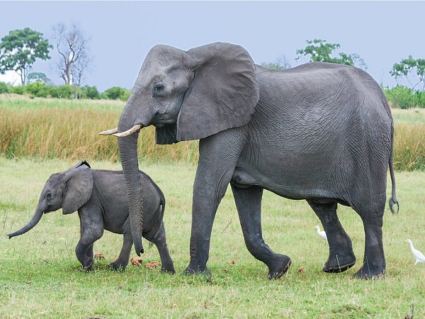
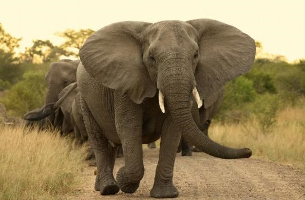

Con voi là một loài vật thông minh và có sự gắn kết với gia đình rất tốt, loài vật khổng lồ hiển lành với bản tính nghịch ngợm được con người rất yêu quý.
Con voi thuộc họ các động vật dạ dày. Chúng là họ duy nhất còn tồn tại đến bây giờ của bộ có vòi. Họ voi chia làm 3 loài còn tồn tại: Voi đồng cỏ ở Châu Phi, voi Châu Á ( chúng phân bổ chủ yếu ở Ấn Độ, vùng Tây Nam Á) và loài còn lại là voi Ma mút ( Đây là loài vật trên cạn lớn nhất trên thế giới, những loài này đã bị tuyệt chủng cách đây 10.000 năm).
Loài voi là loài động vật có vú lớn nhất trên thế giới còn sinh sống đến ngày hôm nay. Chú voi đực nặng nhất có khổi lượng 12 tấn nhưng đã bị bắn hạ vào năm 1974 tại Angola. Cũng có các loài voi nhỏ nhất với kích thường như con bê hay con lợn loại lớn. Voi có một cái đầu to, có vòi và 2 chiếc ngà. Con Voi là loài vật có 4 chân to lớn để có thể chịu được cân nặng của cơ thể.
